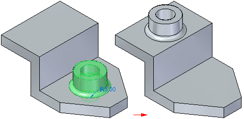
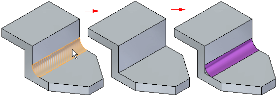

Detaching and attaching faces and features
You can modify synchronous models by detaching and attaching one or more faces or features. Detaching faces or features makes it possible to remove faces from the solid model without deleting them. This can be useful when you need to create a new variation of an existing model that does not contain some of the features on the existing model, but you want to maintain the features in the document for possible future needs.
Detaching faces or features also makes it possible for you to move or rotate the face set to a new position on the model and then reattach them in the new location.

Detaching faces
You can detach faces using the Detach command on the shortcut menu when one or more faces or features are selected, or you can use the Detach option available on the Move command bar. You can select the faces in the graphics window or in PathFinder.
When you use the Detach shortcut menu command, the detached faces are hidden automatically in the graphics window, and the color is changed to the construction color. You can use PathFinder to display the faces.

To detach faces successfully, the integrity of the solid body must be maintained. In other words, for a detach operation to be successful, no gaps between faces are allowed. If a solid body cannot be maintained, the detach operation is unsuccessful, and the model will not be modified. A message is also displayed to inform you that the model was not modified.
When you detach faces, adjacent faces are often modified to ensure the integrity of the solid model. For example, when you detach a blend face, such as a round, the size and shape of the adjacent faces changes.
Attaching faces
You can attach faces using the Attach command on the shortcut menu when detached faces are selected in PathFinder or the graphics window. To successfully attach, a valid solid body must be formed. If the faces you are trying to attach do not form a valid solid body, a message appears.
In some cases you may be able to adjust the position of the detached faces, and attach them successfully. In other cases, it may not be possible to form a valid body. In this situation you should consider deleting the detached faces, and model the faces or feature over again.